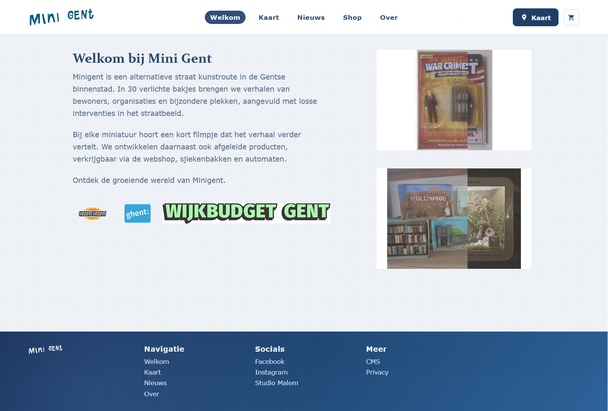
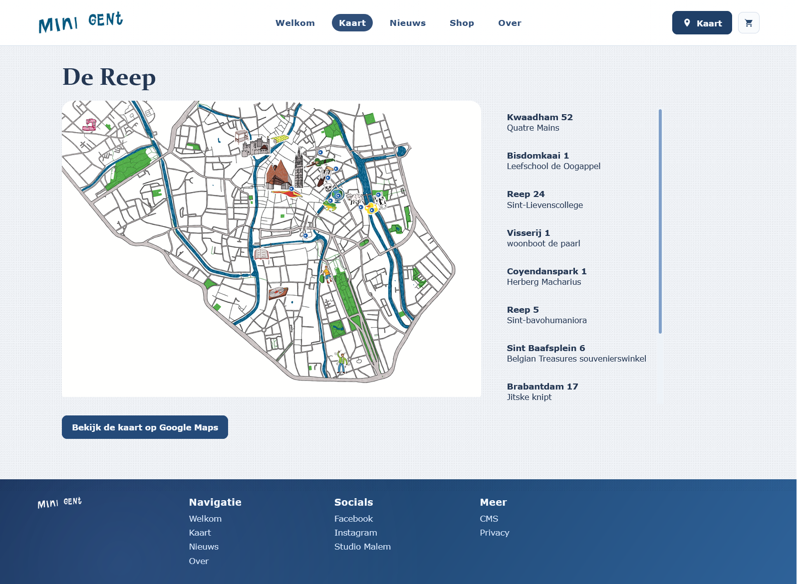
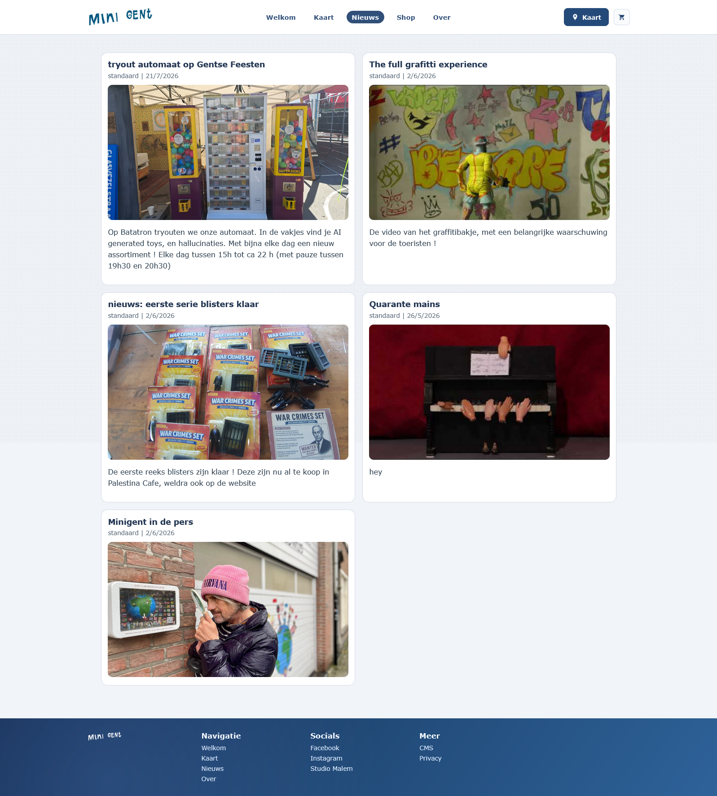
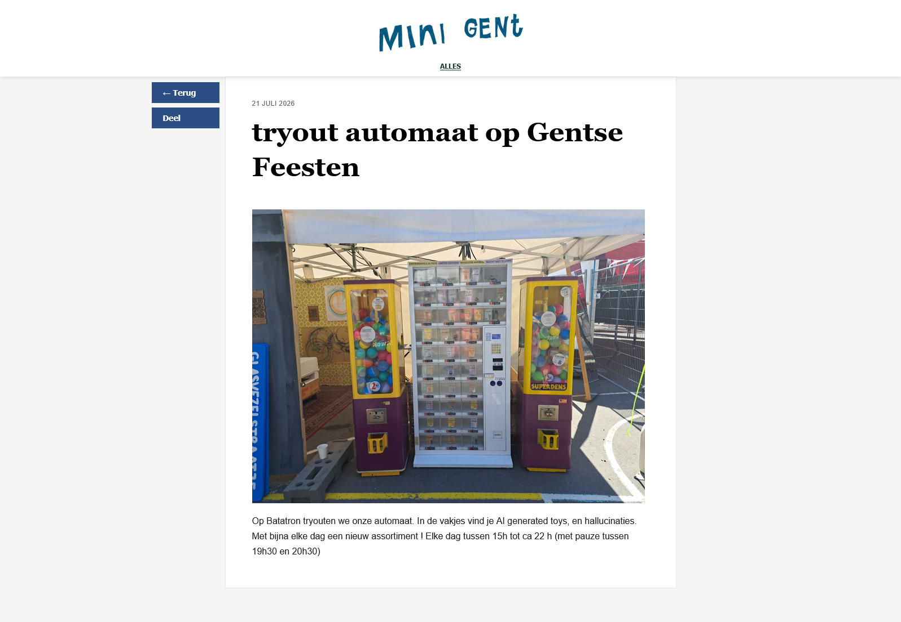
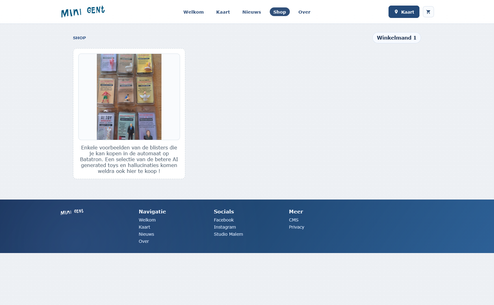
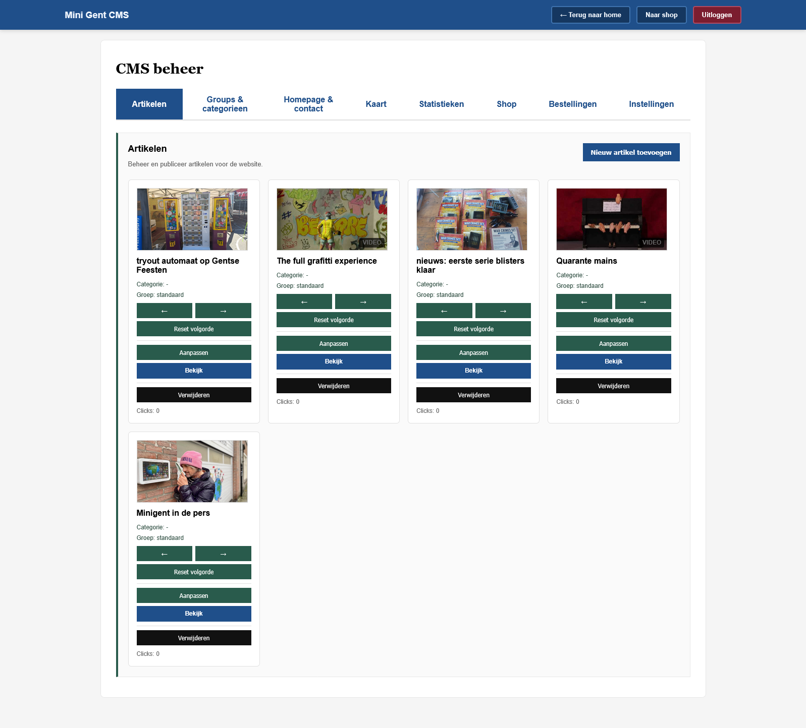
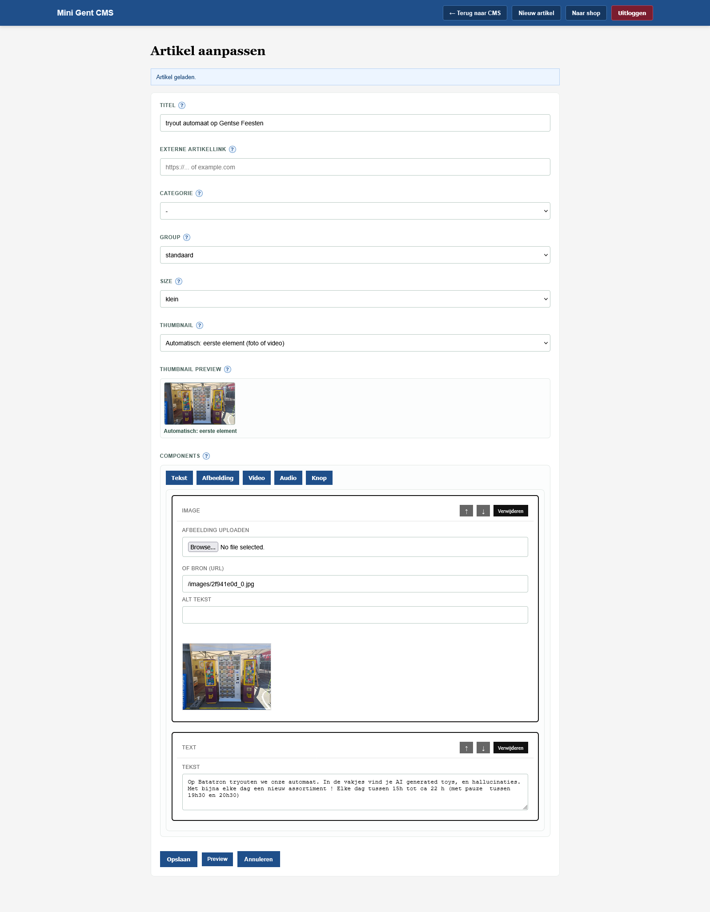
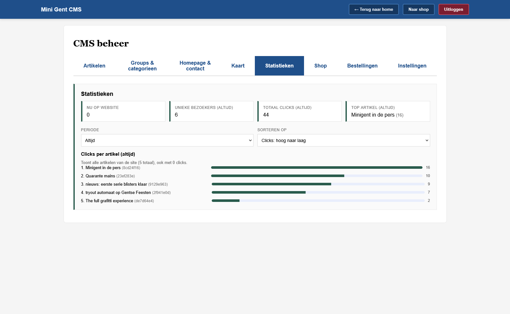

Minigent is een straat kunstroute in de Gentse binnenstad. In 30 verlichte bakjes brengt het verhalen van bewoners, organisaties en bijzondere plekken, aangevuld met losse interventies in het straatbeeld.
Bezoek minigent.beVoor www.minigent.be, heb ik de website voor een klant ontworpen, de backend en frontend gemaakt zelfstandig, en dan ook deployed op een server.
De kaart

De kaart is een dynamisch deel van de website, met iconen en locaties die verschijnen op een hover, de kaart en locaties worden aangepast via het content management syteem.
Nieuws

De nieuws pagina heeft support voor artikelen te posten, deze worden gesorteerd, geschreven en geupload via een eigen systeem in het content management systeem.
Artikelen

Webshop

Via het content management systeem kan de beheerder makkelijk nieuwe winkel items aanmaken, deze kunnen gemarkeerd worden als leverbaar, ophaalbaar, elk eigenschap kan tot in detail worden aangepast. Ook gebruikt het systeem online betalingen via Stripe, bestellingen worden automatisch in het content management systeem zichtbaar waar ook de bestellingstatus kan worden veranderd. (bv. opgestuurd)
Het content management systeem voor deze website is volledig zelf geprogrameerd door mij. Zodat het aan alle behoeftes van de klant kan voldoen, en de website kan evolueren naarmate er meer nodig is.


